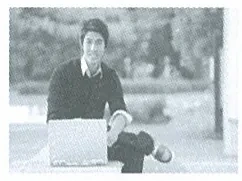
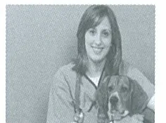

Train to be a Veterinary Nurse
Here at Hong Kong Metropolitan University we have been training veterinary nurses for over 7 years. Our teaching staff come from all over the world, including New Zealand, South Africa and Russia. Our programmes are designed to train you in all the skills necessary to be a veterinary nurse. You’ll also study communication and the course includes a six-month internship (local or overseas). You can choose from a full-time degree, diploma or certificate programme. Just click here for more details.
香港大都會大學培訓獸醫護士逾七年，教師來自紐西蘭、南非、俄羅斯等地。課程涵蓋獸醫護士所需技能、溝通技巧，以及為期六個月的本地或海外實習。可選全日制學位、文憑或證書課程。
See below for what some of our recent graduates are doing:
以下是部分近年畢業生的發展：

I’ve got a placement as a veterinary nurse in a horse clinic. Being able to specialize like this will hopefully be the key to my future career.
我在馬匹診所獲得獸醫護士職位，希望這種專科經驗有助未來發展。

I wasn’t sure about whether I really wanted to be a vet, so I did the diploma course first. In September I’m going to start studying full-time to become a vet!
我原本未確定是否想做獸醫，所以先修讀文憑課程。九月將開始全日制獸醫學習！
Grandmothers with virtual pets?!
My spies tell me that the world of gaming has taken an unusual turn this week. The story is that there’s a community of old people in Florida, USA doing some serious game time to collect online virtual pets of all things. Mrs Crannery, a retired teacher, 76, explains it this way:
據報美國佛羅里達州有一群長者投入遊戲，收集網上的虛擬寵物。76 歲退休教師 Crannery 太太解釋：
Well, we got into the online stuff like the virtual pet thing and car racing games to keep our minds active as we get older. We do the usual things with our virtual pets. I’ve got two horses. It’s certainly better than spending your time on those card playing games sites.
我們玩虛擬寵物和賽車遊戲，是為了年紀漸長時保持頭腦活躍。我有兩匹虛擬馬，總比只玩網上紙牌好。
More news from the busy elderly virtual pet breeders – here’s more from Perry Schmidt, our virtual pets expert: ‘new websites are appearing where, believe it or not readers, owners are cross-breeding animals and creating, like, super pets!’
虛擬寵物專家 Perry Schmidt 說，新網站讓主人雜交動物，創造出「超級寵物」。
One is a Draglion – a cross between a lion and a Komodo dragon, imagine that! Lots of excitement about this because it’s so super unusual. No one knows what these elderly gamers will come up with next but you can bet, we’ll keep ya posted!
例如獅子與科莫多龍雜交的 Draglion。大家因其奇特而興奮，未來這群長者還會創造甚麼，令人期待。